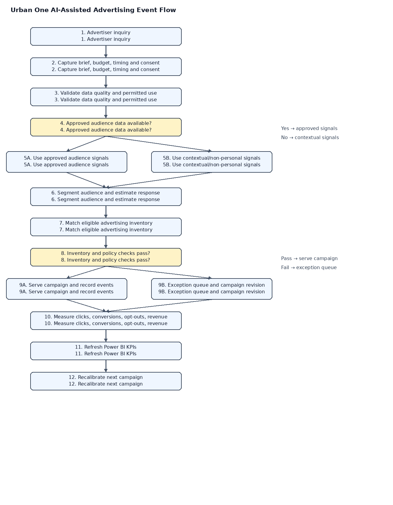

Home / Business Process Analysis
Business Process Analysis
Event-simulation process flow
The process starts with advertiser inquiry, validates campaign and data-use information, branches based on approved audience data, matches eligible inventory, checks policy constraints, and routes the campaign to delivery or exception handling. Outcomes feed reporting and future recalibration.

Sales strategy
Qualify prospects by objective, budget, audience fit, timing, and measurement readiness. Develop cross-channel proposals, preserve human review for pricing and compliance, and evaluate sales stages using consistent CRM definitions.
Sales analysis
Clicks = visitors × CTR. Conversions = clicks × conversion rate. Gross attributed revenue = conversions × revenue per conversion. The illustrative base case yields 40,000 clicks, 3,200 conversions, and $57,600 gross attributed revenue. At a $20,000 budget, CPA is $6.25 and ROAS is 2.88×. Simplified spend ROI is 188% before all other costs.
The success probability should be taken from the Excel simulation after recalculation; it is not a guarantee and may change using a deterministic trial-index sequence with seed 20261013; the estimated success probability is 58.39% for the stated assumptions.
Power BI plan
Recommended visuals: KPI cards for revenue, conversions, CPA, ROAS, and success probability; a revenue distribution; scenario comparison; and visitors-versus-revenue scatter plot. Label simulated outputs clearly.
Power BI report URL: [Insert verified shared report link before submission.]